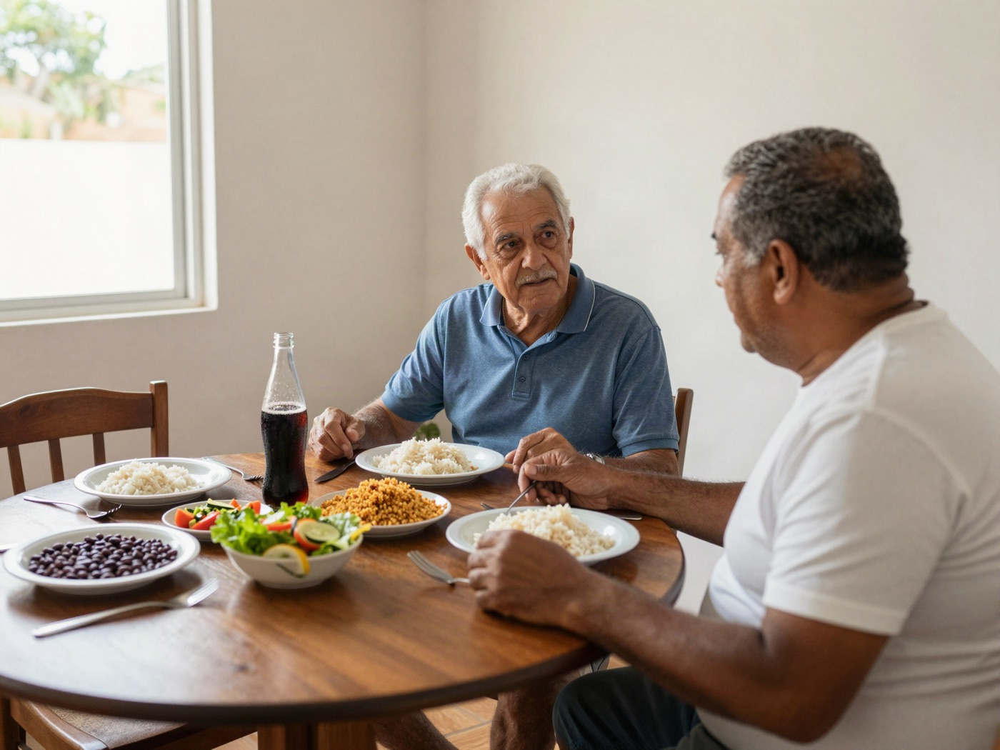

Se o seu filho se afastou, parou de responder ou cortou contato, existe uma parte dessa história que só você pode mudar. O Caminho de Volta é um guia escrito por [Nome] para te mostrar qual é essa parte — e por onde começar, mesmo que ele ainda não queira conversar.
Quero ler O Caminho de VoltaEbook com letra grande + audiobook narrado pela autora + teste + 30 mensagens-modelo. Chega no seu e-mail.
Visualizou. Não respondeu. E você fica olhando a tela.
Se você se reconheceu em pelo menos uma dessas cenas, este livro foi escrito para você. E a primeira coisa que ele faz é tirar você do lugar de quem não sabe o que está acontecendo.
Quem vive isso costuma ouvir as mesmas três frases. Elas vêm de gente que gosta de você. E ainda assim costumam deixar tudo no mesmo lugar — ou pior.
Dá tempo ao tempo.
O tempo, sozinho, raramente muda o que fez o seu filho se afastar. O que muda é o que acontece durante esse tempo — e isso ninguém te explicou.
Vai lá e conversa.
Para um filho que se afastou, "precisamos conversar" costuma soar como convocação. Muitas vezes, a conversa que você quer ter é justamente a que afasta mais.
Ele que tem que te procurar.
Esperar de braços cruzados também é uma mensagem. E o filho costuma ler essa mensagem como "você está em falta comigo".
Nenhuma dessas frases está exatamente errada. Elas só deixam de fora a parte mais importante: o que o seu filho sente quando uma mensagem sua chega. É aí que o livro começa.
Durante 18 anos, você assinou como responsável. Na escola, no médico, no banco, na autorização da excursão. Esse cargo pedia que você orientasse, corrigisse, protegesse e decidisse. E você fez isso.
Quando seu filho virou adulto, esse cargo foi extinto, sem cerimônia. A maioria dos pais continua, com todo o amor, fazendo o trabalho de responsável para alguém que já não precisa de um. É aí que muitas relações começam a esfriar: não por falta de amor, mas porque o jeito de cuidar continuou o mesmo enquanto o filho mudou.
E aqui está a parte que te devolve algum poder: você não controla o que seu filho sente, mas controla como você aparece na vida dele daqui para frente.
Um filho que se afastou costuma manter um radar ligado para três coisas:
Quando o radar encontra uma delas, o alarme dispara — e ele recua mais um pouco. Não porque não te ama, mas porque é assim que ele se protege.
O difícil é que "só queria saber se você está bem" pode chegar como "você sumiu". E "que saudade" pode chegar como "você está em falta comigo". Você mandou amor; o radar leu cobrança. Entender isso muda o que você escreve a partir de hoje.
Quase todas saem com boa intenção. Três delas, para você reconhecer de cara:
As outras seis — o recado por parente, a mensagem para a nora, a indireta no status, o áudio longo, o presente com condição e a visita sem aviso — estão no capítulo 5, com o que mandar no lugar de cada uma.

O objetivo não é forçar o almoço de domingo. É ser alguém com quem vale a pena sentar à mesa.
O livro propõe uma terceira via. Até a próxima conversa de verdade, todo contato seu com o seu filho é sem cobrança, sem conselho e sem pedido — ou não acontece.
Para quem ainda conversa, isso muda o tom. Para quem está no silêncio, significa parar de insistir sem desistir. E dá para começar hoje, sem precisar que ele responda nada.
Cada capítulo leva de 10 a 15 minutos, lido ou ouvido, e termina com um exercício curto e as referências em que se baseia.
Ninguém pode prometer o que o seu filho vai fazer. O que o livro entrega é o que depende só de você:
Psicóloga · CRP XX/XXXXX
[Nome] é psicóloga (CRP XX/XXXXX), com [X] anos de prática em [abordagem].
[História de origem em primeira pessoa, 2 ou 3 parágrafos curtos — a preencher após a entrevista. O momento em que ela entendeu, na própria vida, que um gesto de carinho pode chegar ao outro como cobrança.]
[Segundo parágrafo da história de origem.]
Tudo chega no seu e-mail logo depois da confirmação, para abrir no celular, no tablet ou imprimir.
Letra grande e a voz da autora, para quem lê mal no celular.
O Caminho de Volta, com o audiobook, o teste e as 30 mensagens-modelo: R$ 27, pagamento único, no Pix ou no cartão.
Quero ler O Caminho de VoltaSe, ao ler, você achar que o livro não é para você, é só pedir o reembolso pela plataforma. Você fica com a leitura e recebe o valor de volta.
Pagamento e entrega pela Hotmart. O livro, o audiobook, o teste e as mensagens chegam no seu e-mail logo após a confirmação. No Pix, é na hora.
Não. O livro trabalha o que está do seu lado da relação. Tudo o que ele propõe pode ser feito sem que o seu filho saiba que você está lendo.
O livro foi pensado também para afastamentos longos. Ninguém consegue prever o que vai acontecer na sua família, mas há muito a entender e a fazer do seu lado em qualquer fase.
Quase tudo o que os pais tentam — mensagens, recados por parentes, presentes, visitas — costuma passar pelo radar como cobrança ou pedido. O livro não propõe tentar mais. Propõe tentar diferente: entender o que o seu filho sente quando uma mensagem sua chega e mudar o tipo de contato.
Serve para os dois. Os exemplos alternam entre pai e mãe, e os exercícios são os mesmos.
O afastamento pela distância é um dos 7 tipos do livro, com um capítulo que trata das videochamadas que vão ficando curtas e raras e do que mandar no lugar delas.
O capítulo 10 é inteiro sobre isso: por que disputar com o cônjuge do seu filho costuma obrigá-lo a escolher, e como deixar de ser o problema dessa casa.
Não. É conteúdo educativo escrito por uma psicóloga, e não substitui acompanhamento psicológico.
O livro vem com letra grande e com o audiobook completo, narrado pela autora, dividido por capítulo. Muita gente só ouve.
Por e-mail, logo após a confirmação do pagamento. No Pix, é na hora. Se o e-mail não aparecer, olhe na pasta de promoções ou de spam.
Este livro não é para essas situações. Procure ajuda profissional e, em emergência, os serviços públicos. Em sofrimento intenso, o CVV atende pelo telefone 188, 24 horas.
Sim. Você tem [7 / 30] dias a partir da compra para pedir o reembolso pela plataforma, sem precisar explicar o motivo.
Natal, Dia das Mães, aniversário dele. Para quem vive um afastamento, essas datas costumam ser as mais pesadas do ano. Elas vão chegar com ou sem um plano. A diferença — a única que está nas suas mãos — é chegar nelas entendendo o que acontece, sabendo o que não mandar e com uma mensagem sem alarme pronta, se for a hora.
Quero ler O Caminho de Volta